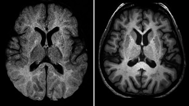

Es una enfermedad hereditaria que afecta a algunas células nerviosas del cerebro, provocando su desgaste. Aunque las personas nacen con ella, los síntomas no suelen manifestarse hasta los 30 o 40 años.

Fibrosis quística:
La fibrosis quística afecta principalmente a los pulmones, y en menor medida al páncreas, hígado e intestino, provocando la acumulación de moco espeso y pegajoso en estas zonas.
Cuando ambos padres son portadores del gen causante de la fibrosis, existe un 25% de posibilidades de que el niño nazca con la enfermedad y un 50% de que sea portador del gen, pero no la manifieste.
Anemia falciforme:
La anemia falciforme es una enfermedad de la sangre de origen hereditario que provoca que los glóbulos rojos tengan una forma diferente a la habitual, provocando problemas en la circulación sanguínea, así como dificultades para combatir contra ciertas infecciones.